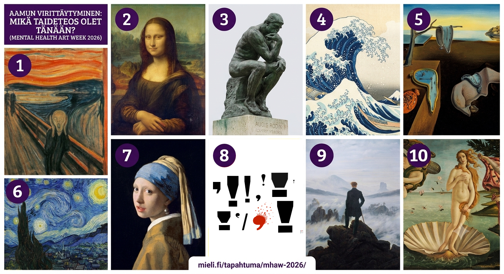

1. Munch: Huuto · 2. da Vinci: Mona Lisa · 3. Rodin: Ajattelija · 4. Hokusai: Suuri aalto · 5. Dalí: Muistin pysyvyys · 6. Van Gogh: Tähtikirkas yö · 7. Vermeer: Helmityttö · 8. Kirsi-Marja Moberg: Huomioarvoista! (yksityiskohta, Purkutaide-näyttely) · 9. Friedrich: Vaeltaja sumuisen meren yllä · 10. Botticelli: Venuksen syntymä
Päivän missio
"Miten rakennamme tekoälyagentin, joka puhuu Mieli ry:n äänellä — ja louhimme datasta kumppanuusmahdollisuuksia?"
📋 Näin käytät sivustoa
- Aloitus yhdessä: NotebookLM-demo klo 13:00–13:20.
- Siirry oman ryhmäsi sivulle yläreunan navigaatiosta klo 13:20.
- Kopioi prompti painamalla "Kopioi"-nappia — liitä se suoraan tekoälytyökaluusi.
- Muokkaa [HAKASULKEISSA] olevat kohdat omaan tilanteeseen sopiviksi.
- Ei suunnitella — testataan. Villit ideat ovat tervetulleita!
🕐 Päivän aikataulu
Kaksi ryhmää — valitse omasi
Äänensävy ja someagentti
Louhitaan Mieli ry:n verkkosivujen rakenne, tiivistetään äänensävy-ohjeet ja rakennetaan tekoälyagentti, joka kirjoittaa Mieli ry:n tyyliin.
Sitemap · Äänensävy · Copilot-agentti · SomepostausFazer-case: data kumppanuuspuheeksi
Analysoidaan Fazerin vuosikertomus Copilotilla, etsitään synergiat Mieli ry:n kanssa ja rakennetaan kumppanuusesitys.
PDF-analyysi · Tiedonlouhinta · Slidedeck · Räätälöinti🛠️ Päivän työkalut
Huom. Copilot vs. Gemini: Organisaation M365 Copilot on turvallinen sisäiselle datalle — se ei käytä tietoja mallien kouluttamiseen. Ilmainen Gemini saattaa hyödyntää syötteitä Googlen koulutuksessa. Käytä Copilotia luottamukselliseen aineistoon.
Copilot-agentti vs. Gemini Gem: Copilot Agent Builder (m365.cloud.microsoft) on ensisijainen — turvallinen ja integroitu M365-ympäristöön. Gemini Gem on hyvä vaihtoehto erityisesti siksi, että siihen voi lisätä tiedostoja pysyviksi tietolähteiksi. Copilot-agentti ei tue tätä halvimmalla M365-lisenssillä.
Muista: Tekoäly voi erehtyä. Tarkista aina faktat ennen julkaisua. Älä syötä luottamuksellisia henkilötietoja.
📱 Yhteinen alkuopastus: Näin luodaan Copilot-agentti
Käydään tämä läpi yhdessä ennen ryhmätöitä. Neljä vaihetta riittää.
Mene osoitteeseen m365.cloud.microsoft. Kirjaudu M365-tilillä. Vasemmasta valikosta löydät kohdan Agentit — klikkaa Uusi agentti.

Klikkaa "Siirry määritykseen" (oikeassa alareunassa) tai kirjoita kuvaus kenttään. Aukeaa agentin asetussivu. Kohdasta Ohjeet löytyy kenttä, johon liitetään järjestelmäohje.

Kopioi järjestelmäohje ryhmäsivulta (Ryhmä A, vaihe 3). Liitä se Ohjeet-kenttään. Sivulta löytyy myös Tieto-osio — sieltä voi halutessaan lisätä verkkosivulähteitä tai pitää oletusasetukset.

Klikkaa "Kokeile"-välilehteä oikeasta yläkulmasta — voit testata agentin heti. Kun olet tyytyväinen, klikkaa "Luo" tallentaaksesi. Agentti ilmestyy vasemman palkin Agentit-listaan.
🤖 Mikä on tekoälyagentti?
Tekoälylle annetaan pysyvä rooli ja ohjeet. Esim. Gemini Gem tai Copilot-agentti, joka kirjoittaa aina Mieli ry:n tyyliin — ei tarvitse selittää joka kerta uudestaan.
Tekoäly, jolla on pääsy ulkoisiin järjestelmiin: kalenteriin, sähköpostiin tai tietokantoihin. Voi hakea ja päivittää tietoa itsenäisesti.
Tekoäly, joka suorittaa monivaiheiset tehtävät itse: suunnittelee, kokeilee, korjaa virheet ja raportoi tuloksen. Kehittyy nopeasti.
Kuka tekee mitä?
💬 Mitä agentti tarvitsee toimiakseen?
Hyvä agentti tarvitsee kolme asiaa: roolin (kuka se on), tiedon (mistä se puhuu ja kenelle) ja äänensävyn (miten se puhuu). Tänään rakennamme kaikki kolme — ja testaamme, toimiiko lopputulos oikeasti.
Avaa omalla laitteella
csy.fi/mieliworkshop